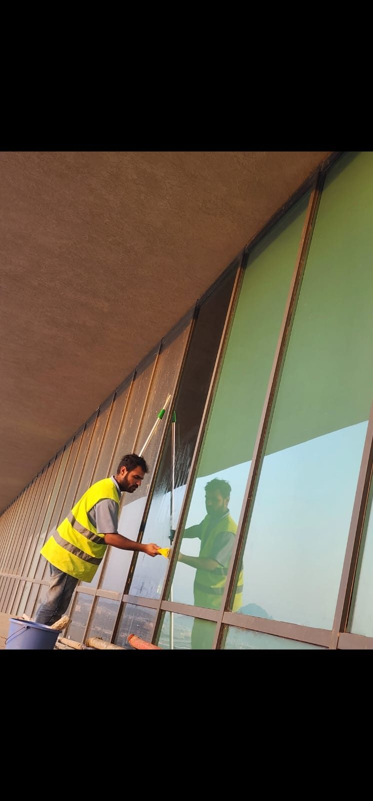

هل تبحث عن شركة تنظيف منازل بالرياض؟ إليك كل ما تحتاج معرفته قبل الحجز | شركة نقاء للتنظيف
إذا كنت تكتب الآن في محرك البحث عبارة "شركة تنظيف منازل قريبه مني" أو تبحث عن شركة تنظيف منازل بالرياض موثوقة، فهذا المقال أُعد خصيصًا لك. سنوضح لك كل ما تحتاج معرفته قبل الحجز حتى تتخذ قرارًا صحيحًا من أول مرة دون تجربة شركات غير موثوقة.
يبحث الكثير من سكان الرياض يوميًا عن شركة لتنظيف المنزل بالرياض تجمع بين الجودة والسعر المناسب والالتزام بالمواعيد، لكن كثرة الخيارات المتاحة تجعل عملية الاختيار مربكة أحيانًا. ومن هنا يأتي دور هذا الدليل من نقاء للتنظيف لمساعدتك على اتخاذ القرار الصحيح.
سواء كنت تبحث عن شركة تنظيف منازل بالرياض لتنظيف شقة صغيرة، أو فيلا كبيرة، أو حتى تبحث عن شركة تنظيف منازل قريبه مني لسرعة الوصول، فهذا الدليل سيغطي كل التفاصيل التي تحتاجها قبل اتخاذ القرار النهائي.
في هذا المقال سنستعرض: علامات الشركة الموثوقة، الأسئلة الواجب طرحها قبل الحجز، أخطاء شائعة عند الاختيار، خطوات الحجز الصحيحة، ولماذا تعتبر نقاء للتنظيف من أفضل الخيارات المتاحة حاليًا في السوق.
لماذا يصعب أحيانًا اختيار شركة تنظيف منازل بالرياض؟
مع انتشار عدد كبير من الشركات والأفراد الذين يقدمون خدمات التنظيف في الرياض، أصبح من الصعب على الكثيرين التمييز بين شركة تنظيف منازل بالرياض احترافية وأخرى غير موثوقة تعتمد فقط على إعلانات جذابة دون خدمة فعلية بنفس المستوى الذي تعد به.
كثرة الخيارات المعلنة
تنتشر إعلانات "شركة لتنظيف المنزل بالرياض" على مواقع التواصل الاجتماعي، لكن ليس كل إعلان يعكس جودة حقيقية على أرض الواقع.
غياب المعايير الواضحة
لا يعرف الكثير من العملاء المعايير الصحيحة لتقييم شركة تنظيف منازل بالرياض قبل الحجز، مما يجعلهم يعتمدون على السعر فقط كمعيار وحيد للاختيار.
تجارب سابقة سلبية
بعض العملاء مرّوا بتجارب غير جيدة مع شركات غير موثوقة، مما يجعلهم أكثر حذرًا عند البحث عن شركة تنظيف منازل قريبه مني أو أي خيار جديد.
علامات تدل على أنك أمام شركة تنظيف منازل بالرياض موثوقة
قبل الحجز مع أي شركة لتنظيف المنزل بالرياض، تأكد من توفر هذه العلامات الأساسية التي تدل على مصداقية الشركة وجديتها في العمل:
- وجود سجل تجاري رسمي وموقع إلكتروني واضح
- تقييمات حقيقية من عملاء سابقين على خرائط جوجل
- فريق يرتدي زيًا موحدًا ومعدات احترافية واضحة
- الرد السريع والواضح على الاستفسارات عبر واتساب
- تقديم ضمان مكتوب أو شفهي واضح على جودة العمل
- أسعار واضحة دون غموض أو رسوم مخفية
💡 نقاء للتنظيف تحقق كل هذه العلامات، وتحرص على أن يشعر كل عميل بالثقة الكاملة من أول تواصل وحتى انتهاء الخدمة.
الأسئلة الواجب طرحها قبل حجز شركة لتنظيف المنزل بالرياض
لتجنب أي مفاجآت لاحقة، احرص على طرح هذه الأسئلة على أي شركة تنظيف منازل بالرياض قبل تأكيد الحجز النهائي، فهذه الخطوة البسيطة توفر عليك الكثير من الوقت والمال وتمنحك راحة بال حقيقية طوال فترة تنفيذ الخدمة:
- ما هي مدة الخبرة في السوق؟ للتأكد من استقرار الشركة وخبرتها الفعلية.
- ما المعدات المستخدمة؟ للتأكد من احترافية أدوات التنظيف المتوفرة.
- هل يوجد ضمان على الخدمة؟ لمعرفة التزام الشركة بجودة العمل.
- ما السعر النهائي شاملًا كل شيء؟ لتجنب أي رسوم إضافية غير متوقعة.
- ما وسائل الدفع المتاحة؟ للتأكد من توفر الطريقة المناسبة لك.
- هل يمكن إعادة الجدولة عند الحاجة؟ لمعرفة مرونة الشركة في التعامل مع الظروف الطارئة.
وتشجع نقاء للتنظيف عملاءها على طرح كل هذه الأسئلة دون تردد، لأن الشفافية الكاملة هي أساس بناء الثقة مع كل عميل جديد.

كيف تجد شركة تنظيف منازل قريبه مني بسرعة؟
من أكثر عمليات البحث شيوعًا هي "شركة تنظيف منازل قريبه مني"، وهي عبارة تدل على رغبة العميل في سرعة الوصول وتوفير الوقت. وفيما يلي أفضل الطرق للعثور على شركة تنظيف منازل بالرياض قريبة من موقعك:
- البحث في خرائط جوجل مع مراجعة التقييمات الحقيقية
- التواصل المباشر عبر واتساب وإرسال الموقع الجغرافي
- السؤال عن مدة الوصول المتوقعة قبل تأكيد الحجز
- التأكد من تغطية الشركة لحيك بشكل مباشر دون رسوم تنقل إضافية
وتغطي شركة نقاء للتنظيف جميع أحياء الرياض تقريبًا، مما يجعلها من أفضل الخيارات لكل من يبحث عن شركة تنظيف منازل قريبه مني بغض النظر عن موقع منزله داخل العاصمة، سواء في الأحياء الشمالية أو الجنوبية أو الشرقية أو الغربية من المدينة.
أخطاء شائعة عند اختيار شركة تنظيف منازل بالرياض
الفرق بين شركة تنظيف منازل بالرياض موثوقة وأخرى غير موثوقة
| العنصر | شركة غير موثوقة | شركة نقاء للتنظيف |
|---|---|---|
| السجل التجاري | غير واضح أو غير موجود | سجل تجاري رسمي معتمد |
| التقييمات | قليلة أو مشكوك فيها | تقييمات حقيقية من عملاء فعليين |
| وضوح الأسعار | غامض قبل المعاينة | جدول أسعار واضح مسبقًا |
| الضمان | غير متوفر غالبًا | ضمان حقيقي على الجودة |
| الرد على الاستفسارات | بطيء أو غير منتظم | رد سريع عبر واتساب |
| التغطية الجغرافية | محدودة لبعض الأحياء | تغطية شاملة لكل الرياض |
خطوات الحجز الصحيحة مع نقاء للتنظيف
بعد التأكد من اختيار شركة تنظيف منازل بالرياض موثوقة، إليك خطوات الحجز الصحيحة لضمان تجربة سلسة من البداية حتى النهاية:
- التواصل الأول: عبر واتساب مع توضيح موقع المنزل ونوع الخدمة المطلوبة.
- استلام عرض السعر: بشكل واضح وشفاف دون أي غموض.
- تحديد الموعد المناسب: حسب جدول العميل اليومي.
- وصول الفريق: في الموعد المحدد بالزي والمعدات الموحدة.
- تنفيذ العمل: وفق الخطة المتفق عليها مسبقًا.
- المراجعة النهائية: مع العميل قبل مغادرة الفريق للتأكد من الرضا التام.
باقات شركة تنظيف منازل بالرياض التي تقدمها نقاء للتنظيف
لتسهيل عملية الاختيار، وفرت نقاء للتنظيف باقات مرنة تناسب مختلف احتياجات العملاء الباحثين عن شركة لتنظيف المنزل بالرياض:
- تنظيف الأرضيات والغبار العام
- تنظيف المطبخ الأساسي
- ترتيب عام للمنزل
- تنظيف جميع الغرف والحمامات
- تنظيف النوافذ والزجاج
- تعقيم شامل للمطبخ
- فرق متعددة للإنجاز السريع
- تنظيف عميق شامل
- معدات بخار وشفط صناعية
- زيارات دورية مجدولة
- أولوية في الحجز
- أسعار تفضيلية ثابتة
ماذا لو لم تكن راضيًا عن نتيجة التنظيف؟
من أهم العلامات التي يجب التأكد منها قبل التعامل مع أي شركة تنظيف منازل بالرياض هي سياسة التعامل مع الشكاوى أو عدم الرضا عن النتيجة، وهي نقطة كثيرًا ما يتم تجاهلها عند الحجز، رغم أهميتها الكبيرة في تحديد مدى احترافية الشركة على المدى الطويل.
- هل يمكن طلب إعادة تنظيف منطقة معينة دون تكلفة إضافية؟
- هل يوجد خط تواصل مباشر للشكاوى والملاحظات؟
- هل تستجيب الشركة بسرعة لأي ملاحظة بعد انتهاء العمل؟
وتحرص نقاء للتنظيف على معالجة أي ملاحظة من العميل فور استلامها، والعمل على إعادة أي جزء غير مرضٍ من الخدمة دون أي تكلفة إضافية، لأن رضا العميل هو الأولوية الأولى دائمًا.
لماذا تعتبر شركة نقاء للتنظيف الخيار الأفضل عند البحث عن شركة تنظيف منازل بالرياض؟
خبرة حقيقية وسجل تجاري واضح
تعمل نقاء للتنظيف وفق معايير احترافية واضحة منذ سنوات في تقديم خدمات التنظيف بالرياض.
تغطية شاملة لكل أحياء الرياض
سواء كنت تبحث عن شركة تنظيف منازل قريبه مني في شمال أو جنوب أو وسط الرياض، فإن الفريق يصل إليك في الوقت المحدد.
أسعار شفافة دون رسوم مخفية
توضح شركة لتنظيف المنزل بالرياض جدول أسعارها بوضوح تام قبل تأكيد أي حجز.
ضمان حقيقي على الجودة
تلتزم نقاء للتنظيف بإعادة أي جزء غير مرضٍ من الخدمة دون أي تكلفة إضافية على العميل.
فريق مدرب ومؤمن عليه
يخضع فريق العمل لتدريب مستمر ويعمل بأعلى معايير السلامة والاحترافية في كل زيارة.
الفرق بين شركة لتنظيف المنزل بالرياض والعمالة الفردية
يفكر بعض الباحثين عن شركة تنظيف منازل قريبه مني في الاستعانة بعامل أو عاملة فردية بدلًا من التعاقد مع شركة لتنظيف المنزل بالرياض متكاملة، اعتقادًا منهم أن ذلك أوفر أو أسهل، لكن الفرق الحقيقي يظهر بوضوح عند المقارنة الدقيقة.
| العنصر | عمالة فردية | شركة لتنظيف المنزل بالرياض |
|---|---|---|
| المعدات المستخدمة | أدوات شخصية بسيطة | معدات احترافية متكاملة |
| التأمين والمسؤولية | غير متوفر عادة | تأمين وضمان على العمل |
| الالتزام بالمواعيد | غير مضمون دائمًا | جدولة منظمة وموثوقة |
| إمكانية الاستبدال عند الغياب | غير متاحة غالبًا | فريق بديل جاهز فورًا |
| الرقابة على الجودة | تعتمد على شخص واحد | إشراف ومراجعة مستمرة |
وبناءً على هذه المقارنة، يتضح أن التعاقد مع شركة لتنظيف المنزل بالرياض متكاملة يوفر ضمانات حقيقية لا يمكن لعامل فردي تقديمها مهما كانت مهارته الشخصية.
هل السعر الأقل يعني دائمًا شركة أفضل؟
من الأخطاء الشائعة عند البحث عن شركة تنظيف منازل بالرياض هو الاعتقاد بأن السعر الأقل يعني بالضرورة صفقة أفضل. في الواقع، قد يكون السعر المنخفض جدًا علامة تحذيرية تستحق التوقف عندها قبل الحجز.
لماذا قد يكون السعر المنخفض مشبوهًا؟
بعض الشركات أو الأفراد يقدمون أسعارًا منخفضة جدًا لجذب العملاء، ثم يضيفون رسومًا إضافية أثناء التنفيذ أو يستخدمون مواد رخيصة تؤثر على جودة النتيجة النهائية.
كيف تحمي نفسك من هذا الفخ؟
اطلب دائمًا توضيح السعر النهائي شاملًا كل التفاصيل قبل تأكيد الحجز مع أي شركة لتنظيف المنزل بالرياض، وتجنب أي عرض غامض أو غير مفصل بشكل كافٍ يترك مجالًا للتأويل لاحقًا.
⚠️ السعر المنخفض بشكل غير منطقي مقارنة بمتوسط السوق قد يكون مؤشرًا على جودة أقل أو رسوم مخفية لاحقة، لذا احرص دائمًا على المقارنة الذكية وليس السعر فقط.
أهمية قراءة العقد أو الاتفاق قبل حجز شركة تنظيف منازل بالرياض
حتى لو كان الاتفاق شفهيًا عبر واتساب، من المهم التأكد من توثيق كل التفاصيل المتفق عليها مع شركة تنظيف منازل بالرياض قبل يوم التنفيذ، لتجنب أي لبس أو خلاف لاحق قد يؤثر على تجربة الحجز بشكل عام.
- توثيق السعر النهائي المتفق عليه كتابيًا عبر الرسائل
- تحديد نوع الخدمة والمناطق المشمولة بدقة
- الاتفاق على الموعد والمدة المتوقعة للتنفيذ
- توضيح سياسة الإلغاء أو التأجيل إن وجدت
وتحرص نقاء للتنظيف على توثيق كل تفاصيل الحجز بوضوح عبر واتساب مع كل عميل، بما يضمن حقوق الطرفين ويمنع أي سوء فهم محتمل بعد انتهاء الخدمة.
ماذا يميز شركة لتنظيف المنزل بالرياض عن مكاتب الاستقدام العادية؟
يخلط بعض الباحثين بين شركة لتنظيف المنزل بالرياض المتخصصة ومكاتب الاستقدام التي توفر عمالة منزلية بشكل عام، وهناك فروقات جوهرية بين الاثنين يجب معرفتها قبل اتخاذ القرار النهائي بشأن أي منهما يناسب احتياجاتك الفعلية.
- شركة التنظيف المتخصصة تركز على مهارة التنظيف الاحترافي فقط
- فريق شركة تنظيف منازل بالرياض مدرب على معدات ومواد متخصصة
- الخدمة تُقدم لمرة واحدة أو باشتراك دون التزامات توظيف طويلة
- لا حاجة لإجراءات استقدام أو إقامة أو تأشيرات منفصلة
وهذا الفرق يجعل التعامل مع شركة تنظيف منازل بالرياض متخصصة أسهل وأسرع بكثير من التعاقد مع مكتب استقدام تقليدي، خاصة لمن يحتاج خدمة تنظيف عرضية أو دورية دون التزامات طويلة الأمد أو إجراءات إدارية معقدة ومكلفة.
هل تحتاج شركة لتنظيف المنزل بالرياض قبل كل مناسبة؟
يزداد الطلب على شركة لتنظيف المنزل بالرياض بشكل ملحوظ قبل المناسبات الاجتماعية والعائلية، حيث يرغب الكثيرون في استقبال ضيوفهم بمنزل نظيف ومرتب دون بذل مجهود شخصي كبير في آخر لحظة.
قبل استقبال الضيوف
يفضل حجز شركة لتنظيف المنزل بالرياض قبل يوم أو يومين من المناسبة لضمان وقت كافٍ لأي تعديلات أو طلبات إضافية.
بعد المناسبات والتجمعات
كما يحتاج الكثيرون إلى شركة تنظيف منازل بالرياض بعد انتهاء المناسبة مباشرة لإعادة ترتيب المنزل وتنظيفه بشكل شامل دون إرهاق الأسرة بعد يوم طويل من الاستضافة.
خلال شهر رمضان والأعياد
تشهد هذه الفترة طلبًا كبيرًا على شركة لتنظيف المنزل بالرياض، ولذلك ينصح بالحجز المبكر لضمان الحصول على الموعد المناسب دون انتظار طويل.
كيف تستعد لاستقبال شركة تنظيف منازل بالرياض في أول زيارة؟
لضمان تجربة سلسة وفعالة عند استقبال شركة تنظيف منازل بالرياض للمرة الأولى، إليك بعض النصائح البسيطة التي تساعد الفريق على إنجاز العمل بأفضل شكل ممكن:
- ترتيب الأغراض الشخصية والمقتنيات الثمينة قبل وصول الفريق
- توضيح أي مناطق تحتاج اهتمامًا خاصًا مسبقًا
- التأكد من توفر مصدر مياه وكهرباء داخل المنزل
- إبقاء رقم التواصل متاحًا طوال فترة التنفيذ لأي استفسار
- مراجعة النتيجة مع الفريق قبل مغادرته مباشرة
وباتباع هذه النصائح البسيطة، تضمن حصولك على أفضل نتيجة ممكنة من أول تعامل مع أي شركة لتنظيف المنزل بالرياض، وتوفر وقتًا إضافيًا على الفريق لإنجاز العمل بكفاءة أعلى وبجودة تستحق التكرار في المرات القادمة.
تجربة عميل حقيقية مع شركة تنظيف منازل بالرياض
لتقريب الصورة أكثر، إليك مثال مبسط لتجربة عميل بحث عن "شركة تنظيف منازل قريبه مني" وانتهى به الأمر بالتعاقد مع نقاء للتنظيف بعد اتباع خطوات الاختيار الصحيحة الموضحة في هذا الدليل:
- البحث الأولي: كتب العميل "شركة تنظيف منازل قريبه مني" في جوجل ووجد عدة خيارات.
- مراجعة التقييمات: قارن بين التقييمات الحقيقية لكل شركة تنظيف منازل بالرياض ظهرت في النتائج.
- التواصل المباشر: أرسل رسالة واتساب لثلاث شركات مختلفة وطرح نفس الأسئلة على الجميع.
- المقارنة النهائية: اختار الشركة الأكثر وضوحًا في الرد والأسعار والضمان المقدم.
- الحجز والتنفيذ: حصل على موعد خلال 24 ساعة وتم تنفيذ الخدمة بجودة مطابقة للوعد.
وهذا المثال يوضح عمليًا كيف يمكن لأي شخص يبحث عن شركة تنظيف منازل بالرياض أن يتخذ قرارًا مدروسًا خلال وقت قصير باتباع خطوات بسيطة وواضحة.
الأسئلة الشائعة حول اختيار شركة تنظيف منازل بالرياض
هل يمكن الاعتماد على شركة تنظيف منازل بالرياض للاشتراك طويل الأمد؟
بعد التأكد من جودة أول تجربة، يفكر الكثير من العملاء في الانتقال من الحجز لمرة واحدة إلى اشتراك دوري طويل الأمد مع نفس الشركة، وهو قرار منطقي عند التعامل مع شركة تنظيف منازل بالرياض موثوقة.
يوفر الاشتراك الدوري عدة مزايا: أسعار تفضيلية، أولوية في الحجز، وفريق ثابت يتعرف تدريجيًا على تفاصيل المنزل واحتياجاته الخاصة، مما يحسن جودة النتيجة مع كل زيارة جديدة.
وتشجع نقاء للتنظيف عملاءها على تجربة الخدمة أولًا لمرة واحدة قبل الالتزام باشتراك طويل الأمد، إيمانًا منها بأن الثقة تُبنى تدريجيًا من خلال التجربة الفعلية وليس فقط الوعود التسويقية.
أسئلة إضافية يطرحها الباحثون عن شركة تنظيف منازل قريبه مني
إلى جانب الأسئلة الأساسية المذكورة سابقًا، هناك بعض الاستفسارات الإضافية التي يطرحها الباحثون عن شركة تنظيف منازل قريبه مني تحديدًا، نظرًا لاهتمامهم بعامل السرعة وقرب الموقع:
- كم من الوقت يستغرق وصول الفريق بعد تأكيد الحجز؟
- هل تتوفر خدمة الحجز الطارئ في نفس اليوم؟
- هل يختلف السعر حسب قرب أو بعد الموقع عن مركز المدينة؟
- هل يمكن تتبع موعد وصول الفريق مباشرة عبر واتساب؟
وتحرص شركة نقاء للتنظيف على تقديم إجابات واضحة وسريعة لكل هذه الاستفسارات، لأن سرعة الاستجابة والوضوح في التواصل هما من أهم العوامل التي يبحث عنها كل من يكتب "شركة تنظيف منازل قريبه مني" في محرك البحث.
ومن خلال متابعة كل هذه النقاط الموضحة في هذا الدليل، ستكون قادرًا على اتخاذ قرار مدروس عند اختيار أي شركة تنظيف منازل بالرياض، بدلًا من الاعتماد فقط على أول نتيجة تظهر في محرك البحث أو أول إعلان تشاهده على مواقع التواصل الاجتماعي.
ومن المفيد أيضًا معرفة أن بعض العملاء يفضلون طلب معاينة مصورة عبر مكالمة فيديو قصيرة قبل الحجز النهائي، خاصة في حالات التنظيف الشامل للفلل الكبيرة أو المنازل التي تحتاج جهدًا إضافيًا واضحًا. وتوفر بعض الشركات المتخصصة هذا الخيار لتقديم عرض سعر أكثر دقة دون الحاجة لزيارة ميدانية مسبقة، مما يوفر الوقت على الطرفين ويسرّع عملية اتخاذ القرار النهائي بشكل ملحوظ.
الخاتمة
في النهاية، اختيار شركة تنظيف منازل بالرياض مناسبة لا يحتاج إلى تعقيد، بل يكفي اتباع المعايير الصحيحة: التحقق من السجل التجاري، قراءة التقييمات، طرح الأسئلة الصحيحة، والتأكد من وجود ضمان حقيقي على الخدمة.
سواء كنت تبحث عن شركة لتنظيف المنزل بالرياض لمرة واحدة، أو تبحث عن شركة تنظيف منازل قريبه مني لاشتراك دوري، فإن نقاء للتنظيف تقدم لك كل هذه المعايير مجتمعة: خبرة، شفافية، ضمان، وتغطية شاملة لكل أحياء الرياض.
تواصل الآن مع شركة نقاء للتنظيف عبر واتساب واحصل على استشارة مجانية قبل الحجز، ودع فريقنا المتخصص يجيب عن كل أسئلتك بكل شفافية ووضوح.
وفي النهاية، تذكر دائمًا أن الوقت الذي تقضيه في المقارنة والاختيار الصحيح لشركة تنظيف منازل بالرياض يوفر عليك الكثير من الوقت والمال والجهد لاحقًا، ويضمن لك تجربة إيجابية تستحق التكرار مع نفس الشركة في كل مرة تحتاج فيها هذه الخدمة.
وتحرص شركة نقاء للتنظيف على مراجعة أساليب العمل باستمرار ومتابعة أحدث الممارسات في مجال تنظيف المنازل بالمملكة، بما يضمن تقديم تجربة موثوقة وواضحة لكل من يبحث عن شركة تنظيف منازل بالرياض لأول مرة أو يرغب في تكرار التعامل معها مجددًا.
🎉 احصل على استشارة مجانية قبل الحجز!
تواصل معنا الآن واطرح كل أسئلتك قبل اتخاذ قرار الحجز
احجز الآن مع شركة نقاء للتنظيف
الخيار الواضح والموثوق لكل من يبحث عن شركة تنظيف منازل بالرياض
- سجل تجاري رسمي وتقييمات حقيقية
- تغطية شاملة لكل أحياء الرياض
- ضمان على الجودة
- أسعار شفافة دون رسوم مخفية
- رد سريع عبر واتساب